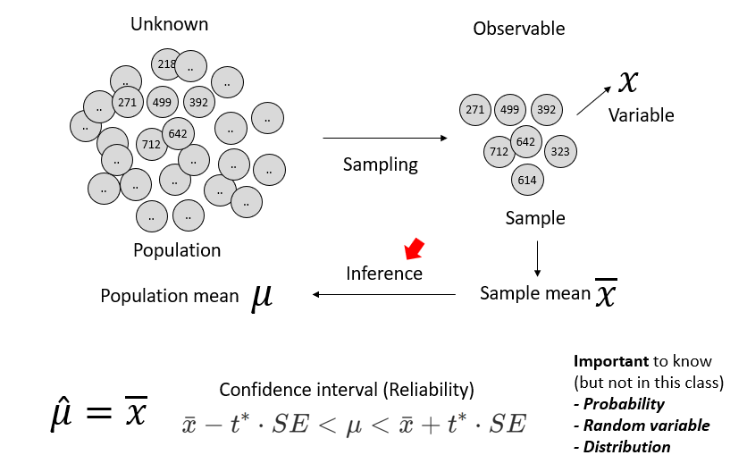
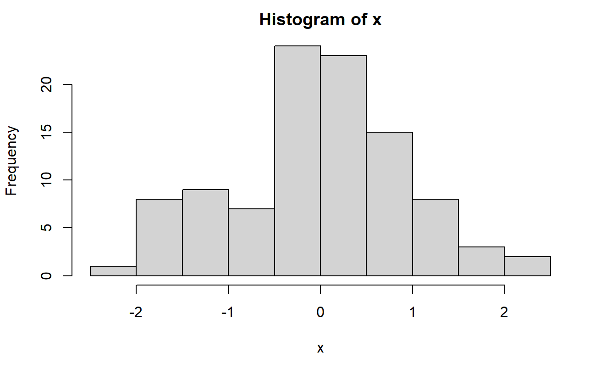
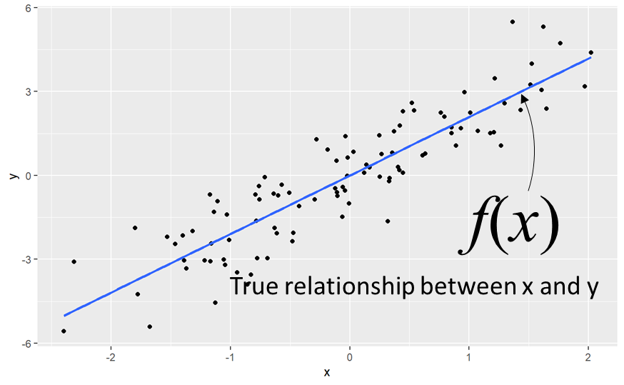
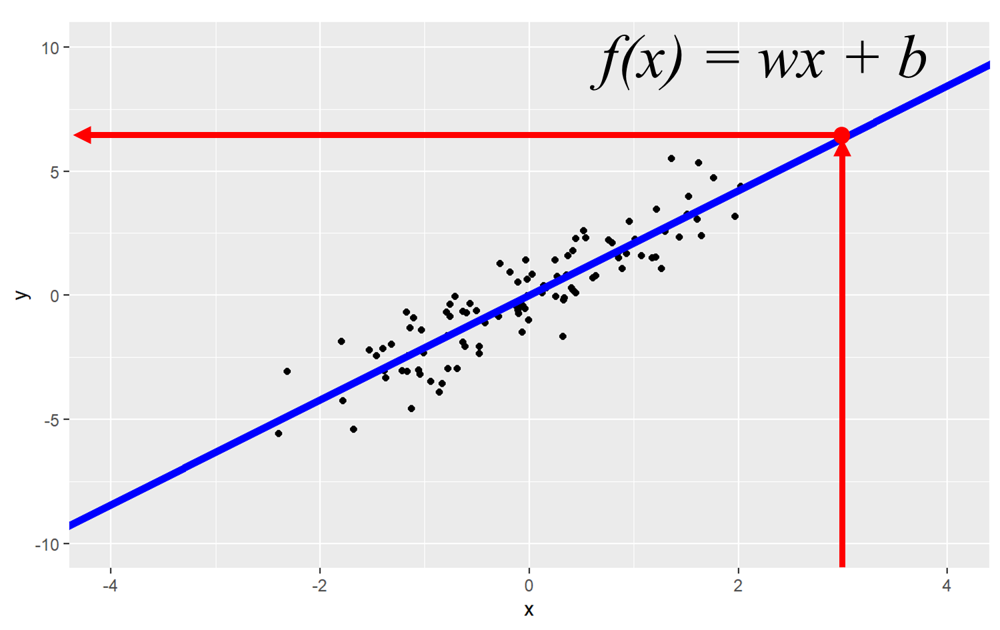
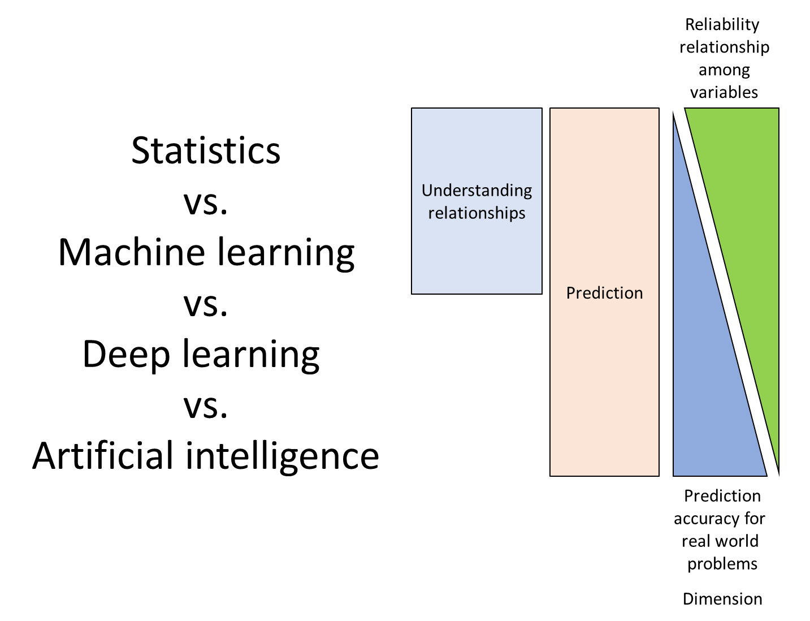
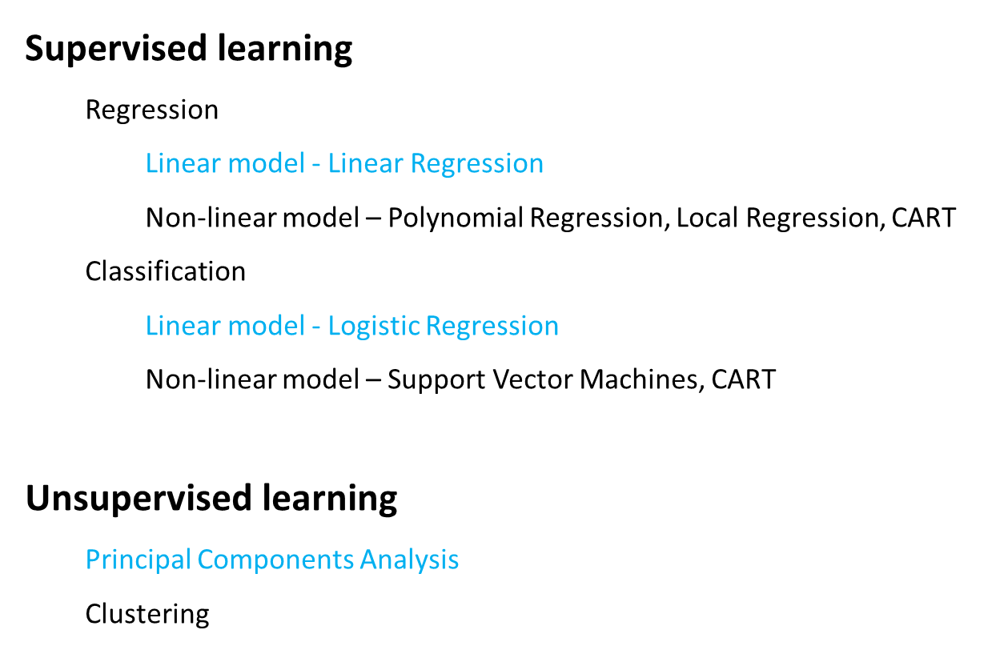
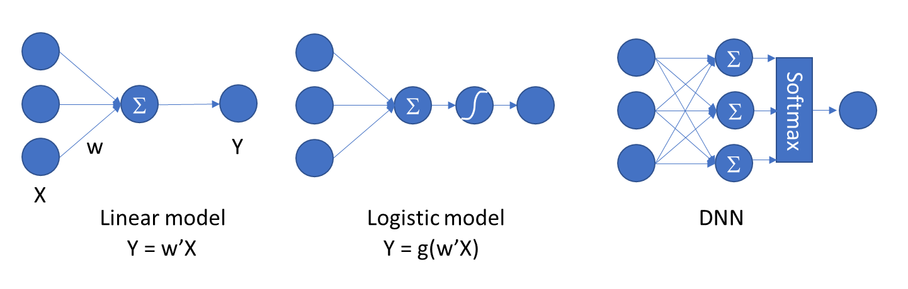
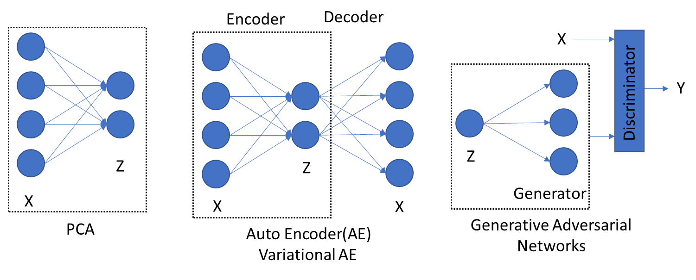
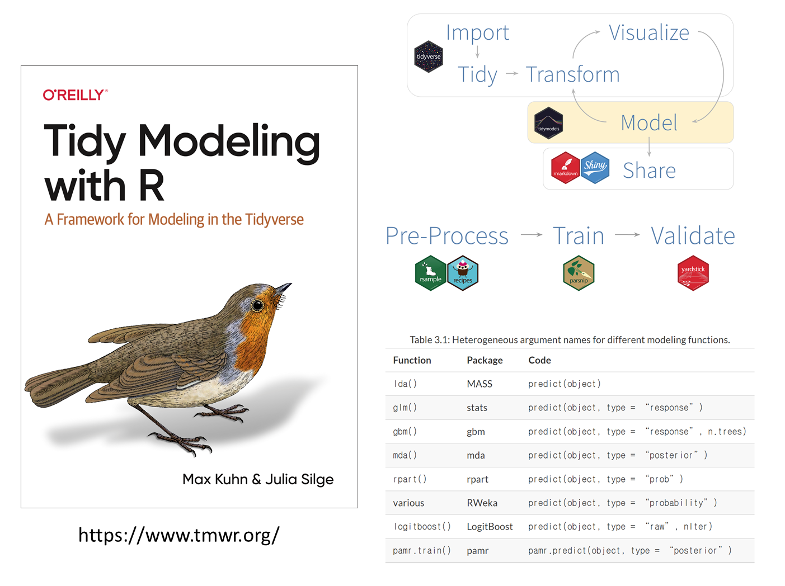

x <- rnorm(100)
hist(x)
mean(x)
sd(x)13 Statistics and modeling
13.1 Statistics
Predictions through data analysis. In other words, the process of collecting and organizing data and making reliable inferences about unknown facts from it.

본 강의에서는 Inference와 Prediction을 중심으로 개요를 설명하도록 합니다. Reliability와 Probability, Random variable, Distribution 등은 통계뿐만 아니라 딥러닝에서도 매우 중요한 개념으로 관심있는 분들은 꼭 학습하시길 바랍니다.
13.1.1 Univariate data
추정 관점에서 변수가 1개 일 때 예시로 모집단의 평균을 추정할 수 있습니다. 아래 에시에서 100개 데이터를 뽑은 것으로 평균을 구하고 이 표본평균을 모평균의 추정량으로 사용할 수 있습니다.

13.1.2 Multivariate data
두 개 이상의 변수가 있는 상황에서는 두 변수 사이의 관계를 추정할 수 있습니다. f(x)는 true 관계를 나타내고 관측 데이터를 이용해서 추정합니다.

이렇게 추정된 f(x)는 예측에 활용됩니다. 즉, f(x)를 이용해서 관측되지 않은 x에 대한 y값을 구할 수 있습니다. 이는 BSA와 같은 단백질 정량 등의 실험에서 표준곡선을 그리고 표준곡선을 활용한 농도 계산과 같은 의미 입니다.
library(ggplot2)
x <- rnorm(100)
y <- x*2 + rnorm(100)
xy <- data.frame(x, y)
ggplot(xy, aes(x=x, y=y)) +
geom_point() +
geom_smooth(method = lm, formula = y ~ x, se = FALSE)
ggplot(xy, aes(x=x, y=y)) +
geom_point() +
#geom_smooth(method = lm, formula = y ~ x, se = FALSE) +
scale_x_continuous(limit=c(-4, 4)) +
scale_y_continuous(limit=c(-10, 10)) +
geom_abline(intercept = 0.026, slope = 2.11, lwd=2, color="blue")
13.2 Modeling and Prediction
이러한 모델링 방법은 전통적 통계모형에서 최근 인공지능 모형까지 수많은 연구가 진행되어 왔습니다. 이 중 예측 관점에서는 다음과 같은 특성을 말할 수 있습니다.

전통적 통계 모형에서는 p-value와 같이 관측된 통계량에 대한 신뢰성을 검증할 수 있는 반면 최근 AI 모형은 정확도를 더 중시합니다. 인공지능 모형의 복잡도 문제로 요인들의 관계를 설명할 수 없는 경우가 많기 때문인데 최근에는 attention 기법을 이용해서 요인들의 관계를 설명할 가능성도 열려 있습니다.
13.2.1 Statistical learning and Deep learning
예측의 관점에서 최근의 기계학습이나 인공지능 모형은 지도학습과 비지도학습, 그리고 강화학습으로 나눌 수 있습니다. 이 중 다음과 같이 지도학습은 회귀와 분류, 비지도학습은 군집 및 주성분분석 등으로 나눌 수 있습니다.

비록 통계모형 관점에서 검정의 비중이 줄어들긴 했지만 여전히 통계학의 확률과 분포 이론을 활용하고 있고 이는 딥러닝 역시 마찬가지 입니다. Liear regression은 1개 layer에 ReLU, tanh, sigmoid 등 activation function이 없는 딥러닝 모형과 같고 Logistic regression의 분류 문제는 Layer 1개, Activation function도 하나가 있는 모형과 같습니다. 딥러닝 모형의 일반적인 Dense layer는 여러개의 layer와 softmax 를 갖는 모형과 같습니다.

생성형 모형도 유사한 관계가 있습니다. PCA는 차원축소의 대표적 비지도 학습 모형입니다. 공분산행렬로부터 주성분을 구하고 적절한 주성분 몇 개만을 가지고 전체 데이터를 설명할 수 있습니다. 이렇게 축소된 데이터에서 다시 원래 데이터로 복원하는 모형이 Auto encoder와 같은 개념이며 VAE와 GAN에서도 활용됩니다.

위와 같이 통계 개념을 활용하여 계속해서 새로운 딥러닝 모형이 개발되고 있고 기존 모형들의 올바른 활용을 위해서도 통계 이론 습득이 필요합니다.
13.3 Tidymodel
tidymodel은 기존 R에서 활용되는 수많은 종류의 모델링 기술을 통합하기 위해서 만들어진 패키지 입니다. tidyverse 패키지와 함께 데이터사이언스 분야에서는 주요하게 활용되는 분석 도구입니다. tidyverse에서 데이터분석에 관련한 기본 철학은 아래와 같이 데이터 수집, transform, visualize, model, 그리고 share 이며 이 중 modeling 관련한 프로세스를 통합하고 표준화 했습니다. Recipe와 parsnip 등 다양한 패키지들이 활용되는데 본 강의에서는 다루지 않습니다. 그러나 기계학습 수준의 데이터 규모를 갖는 분석 영역에서는 중요하게 활용될 수 있는 도구로서 최근에 사용이 증가하고 있습니다.

13.3.1 Linear regression
간략히 선형모형 관련한 데이터 생성과 tidymodel 활용한 예시를 아래에 소개해 드리니 참고하시면 되겠습니다.
library(tidyverse)
library(tidymodels)
x1 <- rnorm(1000)
x2 <- rnorm(1000)
y <- x1*2 + x2*4 + rnorm(1000)
xy <- data.frame(x1, x2, y)
# data spliting
set.seed(123)
# 3/4 of the data into the training set
xy_split <- initial_split(xy, prop = 3/4)
train_data <- training(xy_split)
test_data <- testing(xy_split)# model type
model <- linear_reg() |>
set_mode("regression") |>
set_engine('lm')
# recipe, the role of variables
rec <- recipe(
y ~ .,
data = train_data
)
# estimate a preprocessing recipe
rec |>
prep()
# display data
rec |>
prep() |>
juice()
rec |>
step_mutate(x12 = x1*x2) |>
prep() |>
juice() |>
boxplot()# workflow
wk <- workflow() |>
add_model(model) |>
add_recipe(rec)
# fit the model to the training data
model_fit <- wk |>
fit(data = train_data)
# parameter estimates
model_fit |>
tidy()
# model statistics (goodness of fit)
model_fit |>
glance()
# apply the same recipe to the test set
newd <- bake(prep(rec), test_data)
# prediction
model_fit |>
predict(new_data = newd)
model_fit |>
augment(new_data = newd)
model_fit |>
augment(new_data = newd) |>
dplyr::select(y, .pred) |>
ggplot(aes(x=y, y=.pred)) +
geom_point()